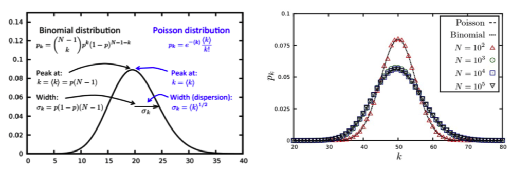
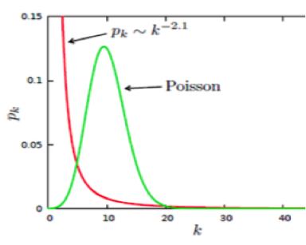
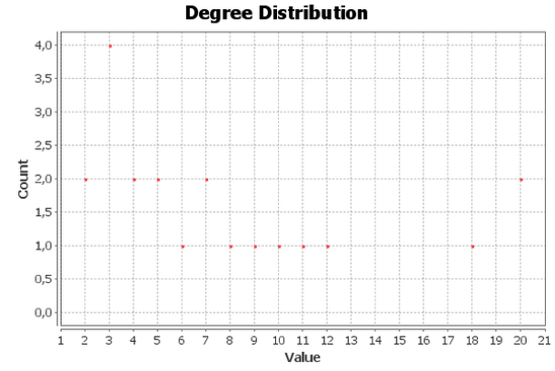
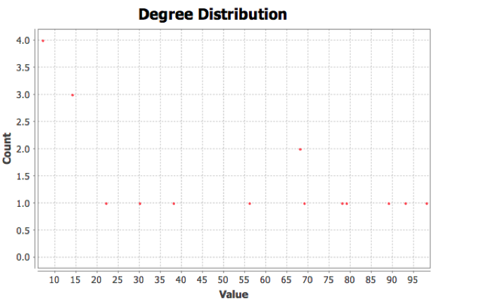

En este apartado procederemos al análisis de las redes que consideramos importantes a la hora de interpretar y poder sacar conclusiones útiles.
Vamos a estudiar las redes obtenidas de las valoraciones positivas y negativas que nos ha dado la encuesta
En este apartado haremos mención a un cierto número de apartados que aparecen en los documentos: (A) Estadísticas de Redes Completas y Filtradas , el documento (B) Gráficas de Redes Filtradas y por último el documento (C) Representación de Redes, para que le sea más fácil al lector leer el análisis y los datos empleados para ello.
En primer lugar se va a analizar la red completa de valoraciones positivas cuya representación se puede observar en el apartado (C) I. Red positiva completa. Y los valore estadísticos arrojados por Gephi los podemos ver en la gráfica del apartado (A) I. Estadística
Tomando los datos de todas aquellas películas que hayan obtenido una valoración de 4 o 5. Empezaremos comprobando si nuestra red se ajusta a la de una de tipo Erdös–Rényi red aleatoria para ello tendremos que corroborar que se cumplan ciertas características típicas de estas red como lo son: 1-Que existan caminos cortos o con distancias muy pequeñas que den aparición al fenómeno conocido como el de los mundos pequeños o small-world donde los estadísticos de: Clustering y densidad deberían ser altos y el de diámetro bajo y 2-La no presencia de Hubs o nodos concentradores debido a que su probabilidad de existencia es muy baja según lo que predice el modelo, observar que la mayoría de los nodos tengan un grado entero a la media y los de mayor grado solo unos pocos más que la media y por último observar que su gráfica de distribución presente la siguiente forma¨:
Usaremos el modelo de red aleatoria para verificar si la nuestra cumple lo predicho por esta, para ello primero calculamos la probabilidad de que un nodo esté unido con otro luego observaremos en qué fase de la red estamos (si en la etapa subcrítica, punto crítico, etapa sub crítica o etapa conectada). Procedemos:
Vamos a calcular la probabilidad de unión de nuestra red en base al grado medio
N=50
k=49
k= p(N-1) ——> despejo p= k / (N-1) ——> p=k/ (n-1)= 49/49=1
Ahora de estar en una red aleatoria estaríamos en la etapa conectada ya que la probabilidad de unión p es mayor al logaritmo neperiano de N entre N es decir:
p>= LnN/N -> Ln(50) / 50 = 3,912 / 50 = 0,0782 --> 1>0,07
Por lo cual tenemos una componente gigante y también se cumple que:
k > LnN --> 49 > 3,912
Lo que implica que todos los componentes son absorbidos, creando una red global conectada de hecho visualmente se ve que no hay componentes aislados y solo hay una componente gigante conexa. Gephi también nos lo corrobora al calcular componentes conexos y da como valor igual a uno.
Ahora estudiaremos si se cumple la propiedad de los mundos pequeños o small-world para ellos haremos un estudio de las distancias entre los nodos:
La distancia
Vemos que nuestra red cumple la propiedad que La longitud media de los caminos de la red va a ser varios ordenes de magnitud más pequeño que N (50 veces) Por lo que la distancia entre dos nodos cualesquiera de nuestra red es sorprendentemente corta.
Hasta ahora aunque parecía que el modelo de redes aleatorias podía ser válido para modelar nuestra red vemos que, en realidad, se incumplen algunas de sus propiedades como por ejemplo la gráfica de la distribución de grados no presente la forma de la distribución de Poison o también conocida como campana de Gauss y visualmente se pueden observar la presencia de algún tipo de nodos Hubs de hecho nuestra red global tiene una distribución de grados muy simple, todos los nodos tienen el mismo número de enlaces, por lo que su gráfica está representada por una distribución donde la función se anula para todos los posibles grados, menos para el grado que tienen todos sus nodos).
Al observar la presencia en la red global de ciertos hubs hemos hecho en Gephi distintos filtrados, principalmente el de peso de aristas conduciéndonos así a distribuciones que siguen una función de ley de tipo potencial las cuales son típicas de una red libre de escala o de Barabasi con la siguiente curva en color rojo:
A continuación analizamos estas redes filtradas y en el capítulo IV de interpretación de datos de este mismo documento analizaremos la modularidad y comunidades que nos da esta red.
En este apartado aplicaremos a la red completa un filtrado para que el estudio sea un poco más exacto, ya que en la red completa no podemos obtener datos concluyentes.
En primer lugar aplicamos un Filtro sobre el peso de aristas de esta forma se formarán enlaces si ha habido muchos más votos positivos entre ellas y no solo uno como en la red completa. En este filtro seleccionamos un rango para las aristas, este caso ponemos el peso mínimo de arista en 50 (de esta forma se unen los nodos solo si les han valorado entre 4 y 5 unas 50 veces o más entre ellas) y aplicamos el Filtro de Componente gigante para que nos aparezca aquellos que están unidos.
La gráfica obtenida con estos filtros las podemos observar en el apartado (C) II. Red positiva filtrada.
Un resumen completo de las estadísticas obtenidas por Gephi las tenemos en el apartado (A) II. Estadística, en la cual observamos la variación de los datos desde la red completa a la filtrada, necesarios para sacar conclusiones prácticas, es decir el grado medio en la red completa era de 49 y teniendo 50 nodos quiere decir que todos los nodos están conectados con todos lo que nos dará por supuesto un estadístico de diámetro y densidad y el Coeficiente de Clustering muy altos, en este caso de 1 pero al aplicar el filtro bajamos el grado medio en torno a 8 y así ya tenemos el estadístico diámetro a un valor de 2 y el de densidad a 0,386 por lo que es más accesible y visual la toma de conclusiones, también solo han quedado 21 nodos de los 50 originales y 81 aristas de las 1225 originales
Obteniendo así en la gráfica de distribución de grados una distribución de ley potencial típica para las redes libres de escalas o Barabasi, la cual mostramos a continuación:

En el apartado (B) I Gráfica filtrada podemos notar la relación inversamente proporcional entre las medidas de grado y clustering ya que siendo el clustering un valor que refleja un posible efecto small-world cabe de esperar que para nodos con grado muy alto o capacidad de ser concentradores de la red eviten la aparición del efecto mundos pequeños, quedando esto reflejado en los valores de las curvas mostradas en la gráfica citada.
En el apartado (B) II Gráfica filtrada podemos notar como hay mayoritariamente 2 películas con el grado medio más alto las cuales vienen representadas por La vida es bella y El rey león, lo que nos indica que este par de películas tuvieron la tendencia a ser votadas positivamente independientemente de cuáles fuesen las demás películas votadas en modo positivo.
En el apartado ( B ) III Gráfica filtrada podemos notar como ya las dos citadas películas (La vida es bella y El rey león, seguidas muy de cerca por Forrest Jumo) Tienen los valores más altos de intermediación y reflejando esta la frecuencia con la que un nodo aparece en el camino más corto de entre los demás nodos de la red, se cabría esperar que gráficamente las encontrásemos en las aproximaciones del centro del red o formando posibles comunidades o hubs debido a este valor de la intermediación muy alto. Para comprobarlo se puede observar la gráfica (C) II. Red positiva filtrada.
En cuanto a las conclusiones que podemos sacar según modularidad y comunidades formadas en la red, lo veremos en el apartado IV Interpretación de datos de este documento.
El estudio de esta red cuya representación gráfica se refleja en el apartado (C) III. Red negativa completa, nos lleva a unas conclusiones similares a las del estudio hecho sobre las valoraciones positivas global, es decir notamos la aparición del fenómeno de los pequeños mundos, teniendo una red global conexa con un diámetro de red sorprendentemente pequeño, y con un Clustering y densidad con valores altos (ver los resultados de estos estadísticos arrojados por Gephi en el apartado (A) III. Estadística.
Hemos notado que la gráfica de distribución de grados no corresponde con la de una distribución de Poisson característica del modelo de Erdös–Rényi o red aleatoria y además se observa la aparición de ciertos hubs o nodos concentradores con un grado muy alto, por lo que hemos procedido al filtrado de esta red según el peso de las aristas y así estudiarla mejor a continuación:
A continuación vamos a entrar más en detalle para ver cuáles son las películas peor valoradas del formulario, para ello vamos a aplicar un filtro sobre el peso de las aristas, en este caso de 6 (esto significa que para que se cree enlace al menos 6 personas tienen que haber votado con 1 o 2 un par de películas) y aislamos la componente gigante que genere esta nueva red. La gráfica obtenida con este filtro las podemos observar en el apartado (C) IV. Red negativa filtrada.
Un resumen completo de las estadísticas obtenidas por Gephi las tenemos en el apartado (A) IV. Estadística en la cual observamos la variación de los datos desde la red completa a la filtrada, necesarios para obtener conclusiones prácticas, es decir el grado medio en la red completa era de 41 y teniendo 50 nodos quiere decir que todos los nodos están conectados bastante unos con otros lo que nos dará por supuesto unos estadístico altos de densidad (2) y coeficiente de clustering (0.888) y bajos en la longitud del camino (1,161) y diámetro pero al aplicar el filtro para sacar conclusiones hemos podido pasar a un grado medio de 5,368, unos estadístico de longitud un poco más altos hasta llegar a 1.887, el diámetro a aumentado a 3 y el clustering como era de esperar ha disminuido hasta 0,592 ya que disminuye la posibilidad de tener el efecto de mundos pequeños al estar la red menos densa. Una vez aplicado este filtro hemos pasado de 50 nodos y 1028 aristas a 19 nodos y 51 aristas obteniendo así en Gephi en la gráfica de distribución de grados una distribución que sigue una ley potencial típica para las redes libres de escalas o de Barabasi, tal y como se muestra a continuación:
En el apartado (B) IV Gráfica filtrada podemos notar la relación inversamente proporcional entre las medidas de grado y clustering ya que siendo el clustering un valor que refleja un posible efecto small-world cabe de esperar que para nodos con grado muy alto o capacidad de ser concentradores de la red eviten la aparición del efecto mundos pequeños, quedando esto reflejado en los valores de las curvas mostradas en la gráfica citada.
En el apartado ( B ) V Gráfica filtrada podemos notar como hay mayoritariamente 3 películas con el grado medio más alto las cuales vienen representadas por Terminator 2, La Guerra de las Galaxias y Alien el octavo pasajero, lo que nos indica que estuvieron tendencialmente a ser votadas negativamente independientemente de cuáles fuesen las demás películas votadas en modo negativo
En el apartado (B) VI Gráfica filtrada podemos notar como Terminator 2, La Guerra de las Galaxias y Alien el octavo pasajero, Tienen los valores más altos de intermediación y reflejando esta la frecuencia con la que un nodo aparece en el camino más corto de entre los demás nodos de la red, se cabría esperar que gráficamente las encontrásemos en las aproximaciones del centro del red, y además formar posibles comunidades o especies de hubs debido a este valor de la intermediación muy alto. Para comprobarlo se puede observar la gráfica (C) IV. Red negativa filtrada.
En cuanto a las conclusiones que podemos sacar según modularidad y comunidades formadas en la red, lo veremos en el siguiente apartado IV Interpretación de datos.